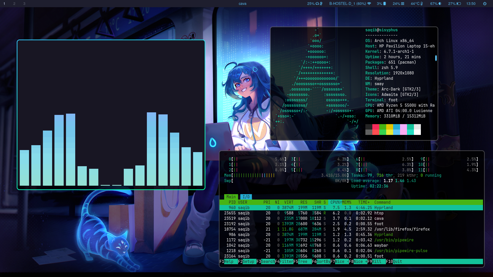

Auto Arch and Hyperland Script Update
207 words · 1 min readIntroduction
I’ve recently made some updates to my Auto Arch and Hyrpland Dotfiles scripts, aiming to streamline the Arch Linux installation process. While I initially thought about combining the two, I decided to keep them separate but interconnected. Now, the Auto Arch script automatically clones the Hyprland Dotfiles repository into the user’s home folder, providing a straightforward way to get both Arch Linux and the Hyprland configuration in one go.
Changes in auto-arch
-
Instead of 3 scripts for install, chroot, postinstall, I have combined them as one script. The script now
- Formats partitions
- Mounts partitions
- Installs packages
- Chroots into system and does post installation configurations
- grub installation etc
-
In the end it clones
hyprland-dotfilesrepository in the$HOMEdirectory of the user which can be used after robooting the system.
Changes in hyprland-dotfiles
- changes in waybar config and styling (removed redundant code)
- moved rofi -> wofi
- some script imporvements
This is what the setup looks like now 
What the installation looks like now
This is the typical workflow if you want to install arch linux with my version of hyprland
- Step 1:
git clone https://github.com/saqibmir1/auto-arch.git
bash auto-arch/arch-install.sh
Step 2:
reboot
Step 3:
Login as user and run the install-hyprland script to install hyprland and deploy my dotfiles.